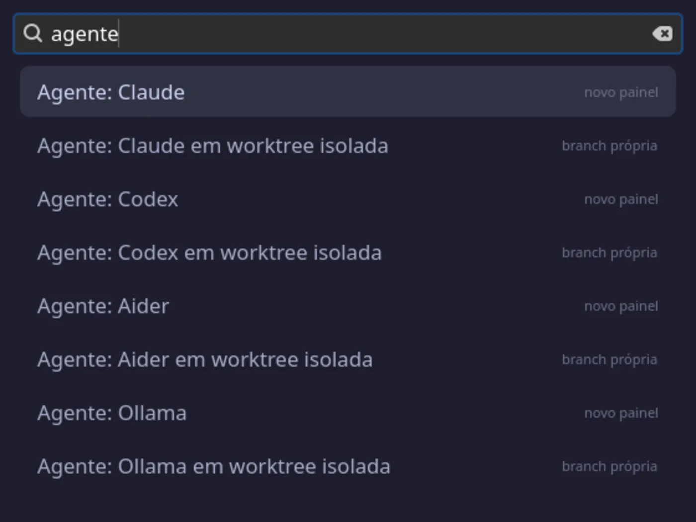
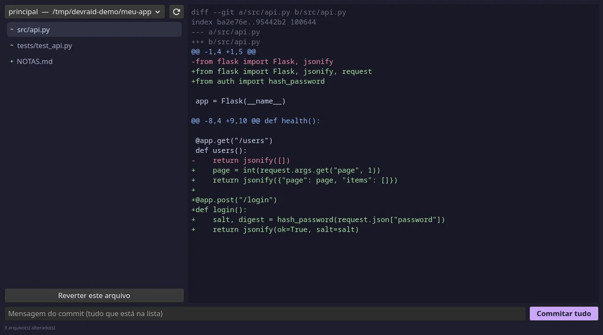
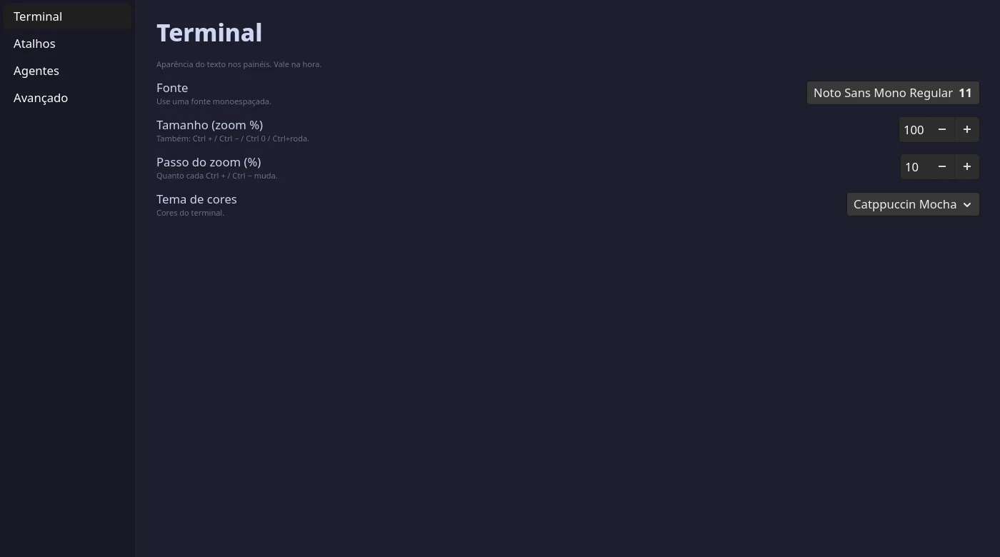

Guia do /dev/raid
Tudo para sair do zero a vários agentes de IA trabalhando em paralelo, cada projeto no seu lugar.
Instalação
O /dev/raid é um app de desktop em Python (GTK4 + VTE) que usa o tmux por baixo. Funciona em Linux, com Wayland (sway) ou X11.
Dependências
| Precisa de | Para quê |
|---|---|
| Python 3.11+, GTK4, VTE 3.91, PyGObject | a janela e os terminais |
tmux | sessões persistentes (o app usa um servidor próprio, separado do seu tmux) |
gh (GitHub CLI) | lista de repositórios, CI e PRs. O app reaproveita o seu gh auth login |
libsecret (secret-tool) e um chaveiro | segredos por projeto |
mosh (opcional) | projetos remotos; sem ele cai para ssh |
# Arch
sudo pacman -S python-gobject gtk4 vte4 tmux github-cli libsecret gnome-keyring mosh noto-fonts
# Fedora
sudo dnf install python3-gobject gtk4 vte291-gtk4 tmux gh libsecret moshInstalar o app
git clone https://github.com/kleber-code/dev-raid.git
cd dev-raid
./install.sh # confere dependências, cria os comandos e a entrada no menu
gh auth login # uma vez
raidpoint install # registra hooks e MCP no Claude Code e no Codex
devraid # abre o appO install.sh cria os links devraid (o app), raidpoint (a CLI) e uma entrada no menu de aplicativos. Os dados ficam em ~/.raid_point/.
Por que “raidpoint” nos comandos? O app se chamava Raid Point. Os nomes internos (comando raidpoint, pasta ~/.raid_point, servidor MCP raidpoint) foram mantidos de propósito para não quebrar instalações e configurações existentes.
Primeiros passos
- Abra o
devraid. Clique em ＋ Novo projeto e escolha uma pasta que seja um repositório git (ou use a aba Repos para clonar um do GitHub). - Clique em ＋ Agente (ou Ctrl+D) e escolha Agente: Claude. Um painel abre com o agente rodando na pasta do projeto.
- Abra mais um agente ao lado — por exemplo Agente: Codex em worktree isolada — e divida a tela com Alt+\ ou Alt+-.
- Quando um agente terminar, aperte Ctrl+G para ver o que mudou e commitar.
- Feche a janela. Os agentes continuam rodando. Abra o app de novo e tudo está lá.

Conceitos
| Termo | O que é |
|---|---|
| Projeto | Uma pasta git. Cada projeto tem uma sessão tmux própria, com seus painéis e abas. |
| Painel | Um terminal dentro da sessão. Tem um nome na borda (Claude, Codex, Shell…). |
| Aba | Uma “janela” do tmux: um conjunto de painéis. Troque com Alt+1…9. |
| Agente | Um preset de programa (nome + comando), como claude ou codex. Você edita a lista em Configurações. |
| Worktree | Uma cópia de trabalho do repositório em outra pasta e branch, para um agente trabalhar sem conflito. |
Projetos e repositórios
A barra lateral tem duas abas:
- Projetos — o que você está mexendo. A bolinha verde indica sessão viva. Um selo mostra o estado dos agentes:
!pedindo atenção,…trabalhando,✓terminou,✗falhou. - Repos — todos os seus repositórios do GitHub (conta e organizações), via
gh. Abrir um repo o clona em~/.raid_point/workspaces/<repo>e o transforma em projeto.
Projetos precisam ser git: é o que permite worktrees, diff e PRs. Para remover um projeto use a paleta (Projeto: remover…). O app pergunta antes e encerra os terminais daquele projeto; a pasta e os arquivos não são apagados.
O título da janela mostra a branch, quantos arquivos estão alterados, o PR aberto e o estado dos checks do CI.
Painéis e layouts
Dividir, mover e fechar painéis é feito pelo tmux, então vale dentro de qualquer projeto e sobrevive ao fechamento do app.
| Ação | Atalho |
|---|---|
| Dividir lado a lado / embaixo | Alt+\ / Alt+- |
| Foco entre painéis | Alt+setas |
| Trocar painel de lugar | Alt+Shift+setas |
| Zoom no painel (tela cheia) | Alt+z |
| Fechar painel (pergunta antes) | Alt+w |
| Nova aba | Alt+t |
| Ir para a aba N | Alt+1…9 |
| Aba anterior / próxima | Ctrl+PageUp / PageDown |
O layout automático dos painéis novos é escolhido na paleta (Layout: …): colunas, linhas, grade, principal à esquerda ou principal em cima. O prefixo do tmux é Ctrl+a.
Para digitar em todos os painéis ao mesmo tempo, use Painéis: digitar em todos na paleta. O botão de ações fica amarelo enquanto estiver ligado.
O botão direito do mouse abre um menu do app (e não do tmux ou do programa dentro do terminal), por isso funciona em qualquer painel: copiar, colar, abrir link, dividir, zoom, mover para nova aba e fechar painel.
Agentes e worktrees
Abra um agente pelo botão ＋ Agente ou pela paleta. Os presets de fábrica são Claude, Codex, Aider, Ollama e Shell (veja Configurações para editar).
Worktree isolada
Cada preset com comando tem a versão “em worktree isolada”. Ela cria uma cópia de trabalho do repositório e abre o agente nela:
- pasta:
<repo>-wt/<agente>-N(ao lado do repositório) - branch:
agent/<agente>-N
Assim dois agentes editam o mesmo projeto sem conflito, e você revisa e junta cada branch depois. Se a worktree não puder ser criada (por exemplo, repositório sem nenhum commit), o /dev/raid não abre o agente sem isolamento: mostra o erro em vez de rodar no diretório principal por engano.
Ações (Ctrl+D)
A paleta de ações é a forma mais rápida de fazer qualquer coisa. Digite parte do nome (sem se preocupar com acentos), use ↑ ↓ e Enter. Esc fecha.

- Agente: … — abre um agente (com ou sem worktree)
- Painel: … — novo shell, nova aba, zoom, fechar
- Layout: … — colunas, linhas, grade…
- Mudanças, Painel de agentes, Lista de projetos, Segredos
- Texto: … — aumentar, diminuir, tamanho normal
- Projeto: … — trocar para outro projeto (ou remover o atual)
- Configurações
Ctrl+D é o “fim de entrada” do terminal. Como o app captura esse atalho, ele não chega ao shell nem aos agentes: para sair de um shell use exit, e /exit no Claude Code. Se preferir manter o Ctrl+D do terminal, troque o atalho em Configurações → Atalhos.
Mudanças e commit
Ctrl+G (ou o botão de lápis no cabeçalho) abre a janela de revisão.

- O seletor do topo escolhe a pasta: o projeto principal ou a worktree de qualquer agente.
- A lista mostra cada arquivo alterado:
~modificado,+novo,−apagado,→renomeado. - O diff aparece colorido ao lado. Arquivos novos aparecem inteiros como adição.
- Reverter este arquivo descarta as mudanças só daquele arquivo, depois de pedir confirmação. Não dá para desfazer.
- Commitar tudo adiciona todos os arquivos da lista e faz o commit com a sua mensagem. Não faz
push.
Ainda não funciona em projetos remotos.
Painel de agentes
Ctrl+J mostra, à direita:
- Painéis do projeto, com o que está rodando em cada um e se está ativo ou parado.
- Sessões de IA e subagentes do Claude Code, com status. Clicar abre o transcript em um painel.
- Commits recentes da branch atual.
- CI / Actions do GitHub para a branch.
- Memória recente do projeto.
As sessões e subagentes vêm dos hooks do Claude Code (instalados por raidpoint install). O Codex e o Aider não emitem esses eventos, então aparecem só como painéis.
Quando um agente fica esperando por você, a barra lateral mostra o selo ! e o app envia uma notificação do sistema; clicar nela abre o projeto.
Servidores remotos
Em ＋ Novo projeto → Servidor SSH / mosh… escolha um host do seu ~/.ssh/config. O /dev/raid conecta com mosh (ou ssh, se não houver mosh) e o tmux roda no servidor: se a sua conexão cair ou o notebook dormir, o trabalho continua lá. Projetos remotos aparecem com bolinha azul.
Se a conexão cair logo ao abrir, o app mostra um aviso e tenta de novo em 5 segundos.
Copiar, colar e links
| Ação | Como |
|---|---|
| Copiar | Ctrl+Shift+C ou Ctrl+Insert |
| Colar | Ctrl+Shift+V ou Shift+Insert |
| Copiar com o mouse | arraste dentro do tmux: o texto vai sozinho para a área de transferência (e para a seleção primária) |
| Seleção nativa | Shift+arrastar |
| Abrir link | Ctrl+clique (URLs e hyperlinks do terminal) |
Uso do plano
O botão ◔ uso do cabeçalho resume o consumo do Claude Code: tokens nas últimas 5 horas, 24 horas e 7 dias, por projeto e modelo, lidos dos transcripts locais.
Para ver o percentual real do plano (os mesmos 5h e semana que o Claude mostra), ative o statusLine:
raidpoint install-statuslineEle só se instala se você ainda não tiver um statusLine configurado. O app avisa quando um limite está perto de estourar.
Configurações
Ctrl+, ou o botão ⚙ no cabeçalho. Tudo é salvo na hora, sem botão “salvar”.

Terminal
- Fonte — escolha uma fonte monoespaçada.
- Tamanho (zoom %) — de 50% a 300%. Também: Ctrl++, Ctrl+−, Ctrl+0 e Ctrl+roda do mouse.
- Passo do zoom — quanto cada Ctrl++/− muda.
- Tema de cores — Catppuccin Mocha, Tokyo Night, Gruvbox Dark ou Nord.
Atalhos
Clique no atalho e aperte a nova combinação. Backspace remove o atalho, Esc cancela. Se a combinação já pertence a outra ação, o app avisa em vez de sobrescrever. Os atalhos fixos do tmux aparecem logo abaixo, só para consulta.
Agentes
Adicione, renomeie ou remova presets. Cada um é um nome e um comando (vazio = só um shell). Qualquer CLI serve: claude, codex, aider, ollama run llama3, gemini… A lista alimenta o botão ＋ Agente e a paleta.
Avançado
Mostra onde ficam os arquivos do app, com botão para abrir cada um.
Editar à mão
O arquivo é ~/.raid_point/config.toml. Chaves ausentes usam o padrão. Se o arquivo estiver inválido, o app avisa no terminal e usa os padrões.
[terminal]
font = "Noto Sans Mono 11"
zoom_step = 0.1
theme = "Catppuccin Mocha"
[keys] # formato GTK; "" desativa
palette = "<Control>d"
settings = "<Control>comma"
changes = "<Control>g"
agents_panel = "<Control>j"
sidebar = "<Control>b"
zoom_in = "<Control>plus"
zoom_out = "<Control>minus"
zoom_reset = "<Control>0"
copy = "<Control><Shift>c"
paste = "<Control><Shift>v"Atalhos
No app
| Ação | Padrão |
|---|---|
| Ações (paleta) | Ctrl+D |
| Configurações | Ctrl+, |
| Mudanças / diff / commit | Ctrl+G |
| Painel de agentes | Ctrl+J |
| Lista de projetos | Ctrl+B |
| Aumentar / diminuir / normal | Ctrl++ / Ctrl+− / Ctrl+0 |
| Copiar / colar | Ctrl+Shift+C / V |
Todos esses são reconfiguráveis em Configurações.
Painéis (tmux)
Veja a tabela em Painéis e layouts. Esses são fixos e funcionam em qualquer projeto. Estão em ~/.raid_point/tmux.conf se você quiser mudar.
Os atalhos do tmux usam Alt de propósito, para não roubar teclas do shell e dos agentes (Ctrl+… é deles). Evitamos Alt+Enter e Alt+b/f porque o Claude Code e o readline os usam.
Sway / i3
O gerenciador de janelas cuida das janelas; o /dev/raid cuida de projetos e agentes. O app_id do app é dev.raidpoint.App:
# ~/.config/sway/config
for_window [app_id="dev.raidpoint.App"] move to workspace 2
assign [app_id="dev.raidpoint.App"] workspace 2Servidor MCP
O raidpoint mcp é um servidor MCP (stdio) que o raidpoint install registra no Claude Code e no Codex. Com ele, os próprios agentes controlam o ambiente:
| Ferramenta | O que faz |
|---|---|
list_projects, list_repos, open_repo | projetos e repositórios do GitHub; clonar e registrar |
list_agents, spawn_agent | ver os painéis e abrir um agente (com worktree=true para isolar) |
send_message, read_output | escrever em um painel de agente e ler as últimas linhas (segredos mascarados) |
usage, ci_status | uso de tokens e estado do CI |
memory_add, memory_search, memory_recent | memória do projeto |
secret_names, run_with_secrets | nomes dos segredos e execução de um comando com eles, após a sua aprovação |
Com isso um agente “orquestrador” pode abrir três agentes em worktrees diferentes, mandar uma tarefa para cada um e ler a saída — tudo visível nos seus painéis.
Memória
Cada projeto tem uma memória em arquivos markdown, com busca de texto (SQLite FTS5). Ao iniciar uma sessão do Claude Code, a memória do projeto entra no contexto. Os agentes gravam e consultam pelo MCP; você, pela CLI:
raidpoint mem add meu-app "decidimos usar sqlite no lugar de postgres"
raidpoint mem search meu-app sqlite
raidpoint mem recent meu-app
raidpoint mem reindexO nome do projeto é o segundo argumento (como aparece em raidpoint ls). Só raidpoint mem recent, sem argumentos, descobre o projeto pela pasta em que você está. Veja os limites de segurança: a memória é lida pelos agentes, então trate o que for gravado nela como não confiável.
Segredos
Chaves de API e senhas por projeto, guardadas no chaveiro do sistema (libsecret). Os agentes só veem os nomes.
- Cadastre pelo menu do projeto (Segredos…) ou pela CLI:
raidpoint secret set meu-app STRIPE_KEY. - O agente pede para rodar um comando usando o segredo (
run_with_secrets). - O app mostra um diálogo de aprovação com o comando e o projeto.
- Se você aprovar, o valor entra só no ambiente daquele comando, e a saída volta com o valor mascarado.
Leia os limites abaixo. Isso protege contra o uso pelas ferramentas MCP; não é uma barreira contra um agente que tem acesso a shell.
Segurança e limites
send_messagesó escreve direto em painéis de agente (abertos pelo app, com o nome de um preset que não seja Shell). Qualquer outro painel — shell, ssh, python — pede a sua aprovação.- As ferramentas MCP nunca devolvem o valor de um segredo. O
run_with_secretssó roda depois da sua aprovação e mascara a saída (apenas o valor exato, não versões codificadas dele). - Um agente com shell, rodando como o seu usuário, consegue em tese ler o chaveiro direto (
secret-tool) ou editar os arquivos de aprovação. Para uma barreira de verdade, rode os agentes sob outro usuário ou em sandbox. - A memória do projeto entra no contexto de novas sessões: o que os agentes gravam nela deve ser tratado como não confiável.
- Alerta de vazamento de segredo em logs: ainda não existe.
- O app usa o seu
ghjá autenticado; não guarda tokens do GitHub.
Linha de comando
| Comando | O que faz |
|---|---|
devraid | abre o app |
raidpoint ls | lista os projetos |
raidpoint add <nome> [dir] | registra um projeto (precisa ser git) |
raidpoint rm <nome> | tira o projeto da lista (não encerra a sessão nem apaga a pasta) |
raidpoint open <projeto> | abre/volta ao projeto no terminal (tmux) |
raidpoint kill <nome> / stop | encerra a sessão tmux de um projeto / o servidor tmux inteiro |
raidpoint repos / open-repo <dono/repo> | repositórios do GitHub; clonar e registrar |
raidpoint mem … / secret … | memória e segredos |
raidpoint usage | uso de tokens (5h / 24h / 7d, por projeto) |
raidpoint events / transcript <arq> [-f] | últimos eventos dos agentes; ver um transcript |
raidpoint install | registra hooks e MCP no Claude Code e no Codex (faz backup antes) |
raidpoint install-statusline | ativa o statusLine para ver o % do plano |
Arquivos e variáveis
| Caminho | Conteúdo |
|---|---|
~/.raid_point/config.toml | fonte, tema, atalhos |
~/.raid_point/agents.json | presets de agentes |
~/.raid_point/projects.json | projetos (gravado com trava e de forma atômica) |
~/.raid_point/tmux.conf | configuração do tmux do app |
~/.raid_point/workspaces/ | repositórios clonados do GitHub |
~/.raid_point/data/ | eventos dos agentes, memória e pedidos de aprovação |
| Variável | Efeito |
|---|---|
RAIDPOINT_HOME | muda a pasta de dados |
RAIDPOINT_SOCKET | nome do socket do tmux (padrão tp) |
RAIDPOINT_APPID | troca o ID do app (rodar uma 2ª instância) |
RAIDPOINT_OPEN | projeto a abrir ao iniciar |
RAIDPOINT_SHOW | changes, palette ou settings: abre essa janela ao iniciar |
Solução de problemas
O app não abre
Rode devraid em um terminal para ver o erro. O mais comum é faltar o GTK4/VTE: confira com python3 -c 'import gi; gi.require_version("Gtk","4.0"); gi.require_version("Vte","3.91")'.
Quero ver as sessões no tmux “de verdade”
O app usa um servidor tmux próprio: tmux -L tp ls (o socket tp). Ele não interfere no seu tmux.
O mouse não seleciona texto
Dentro do tmux (mouse ligado), arrastar copia pelo tmux. Para a seleção nativa do terminal, segure Shift enquanto arrasta.
Um agente não aparece no painel de agentes
Sessões e subagentes vêm dos hooks do Claude Code. Rode raidpoint install e reinicie o Claude Code. Codex e Aider aparecem só como painéis.
Não consigo digitar Ctrl+D no shell
É o atalho de ações do app. Use exit ou troque o atalho em Configurações → Atalhos.
O agente não abriu com worktree
O repositório precisa ter pelo menos um commit. A mensagem de erro diz o motivo; o agente não é aberto sem isolamento.
Desenvolvimento
O código é Python puro, sem build: bin/raid-point (a interface), bin/raidpoint (CLI, hooks e MCP) e raidpoint/core.py (núcleo compartilhado).
- Para testar sem tocar no uso real:
RAIDPOINT_HOME=/tmp/x RAIDPOINT_SOCKET=teste RAIDPOINT_APPID=dev.raidpoint.Teste python3 bin/raid-point - Os nomes das sessões do tmux trocam
.e:por_, e os alvos usam=nome:(casamento exato, não por prefixo). - Se o
projects.jsonestiver ilegível, o app se recusa a sobrescrevê-lo.
Issues e pull requests são bem-vindos em github.com/kleber-code/dev-raid. Licença MIT.